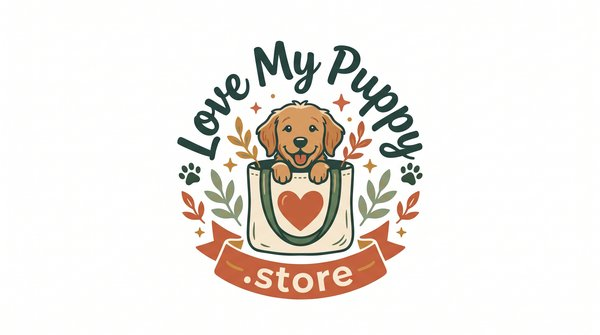

Puppy Potty Training Schedule by Age
House training goes best when your puppy has a steady routine. Young puppies have small bladders and food moves through them fast, so the schedule below changes as your dog grows. Use it as a starting point and adjust it to fit your own puppy.
8 to 10 Weeks
At this age, puppies need a potty break about every 30 to 60 minutes while they're awake. Take your puppy out first thing in the morning, after every meal, after naps, after play and right before bed. Expect one or two trips outside during the night.
3 to 4 Months
Most puppies can hold it for about two hours during the day. Keep taking them out after eating, drinking and waking. Pick one spot in the yard and use the same cue word each time, then reward calmly the moment they finish.
4 to 6 Months
Bladder control grows to about three or four hours. At night, many puppies sleep five or six hours without a break. Keep meals at set times, because regular meals lead to regular potty times and make the schedule much easier to follow.
6 to 12 Months
Older puppies can usually manage four to six hours, though accidents can come back during growth spurts. Stay consistent, keep rewarding success, and skip punishment, which only teaches a puppy to hide when they need to go.
Sample Daily Routine
- 7:00 AM: wake up, potty trip, breakfast
- 7:30 AM: second potty trip
- Midday: lunch, potty, short play
- Afternoon: nap, then straight outside
- 6:00 PM: dinner, then potty trip
- Evening: play, potty, remove water about two hours before bed
- 10:30 PM: final potty trip
Helpful Tips
Watch for signs like sniffing, circling, whining or heading for the door. Clean accidents with an enzyme cleaner so the smell doesn't draw your puppy back. Crate training can help, because dogs tend to avoid soiling where they sleep, but never leave a young puppy crated longer than they can hold it.
New to dog ownership? Visit LoveMyPuppy for friendly guidance, and explore puppy care resources for supplies and ideas that make the first year easier.
Patience matters most. Every puppy learns at a different pace, and a steady routine with lots of praise helps most puppies get there over a few weeks to a few months.
Why a Puppy Potty Schedule Works
Puppies learn by repetition, so a clear housebreaking schedule gives them lots of chances to get it right. Each trip outside that ends in success builds the habit, while each accident indoors slows things down. A written plan also keeps everyone in the family on the same page, which matters more than any single trick.
Handling Accidents and Setbacks
Accidents are normal, and they don't mean you're failing. Stay calm, gently interrupt if you catch your puppy in the act, and carry them outside. Clean the spot with an enzyme cleaner and avoid ammonia products, which can smell like urine to a dog. If accidents suddenly increase, think about changes in routine, food or health, and call your vet if you think it could be a urinary problem.
Indoor Options: Pads and Apartment Living
If you live in an apartment, you may use pads or a grass patch for emergencies or very young puppies. Keep the spot the same, and move it slowly toward the door and then outside. Pads can blur the lesson, so many owners switch to outdoor trips once vaccines and weather allow. For a longer overview, read about potty training timelines and what to expect from week to week.
Quick FAQ
How often should an 8-week-old puppy go out?
About every 30 to 60 minutes while awake, plus after meals, naps and play, and once or twice during the night.
How long does potty training take?
It varies. Many puppies are mostly reliable in a few weeks to a few months, depending on age, consistency and breed.
Should I limit water at night?
Many owners pick up water about two hours before bed, but never hold back water during the day. Check with your vet if you're unsure.
About Love My Puppy
Love My Puppy (lovemypuppy.store) is an online puppy-care store and resource hub. It brings together new puppy essentials, everyday puppy supplies, step-by-step training guides, printable feeding, potty and crate schedules, and a handy dog food checker, so new owners can find what they need in one place. You can browse feeding, potty and crate schedules there, and use the dog food checker when choosing what to feed.